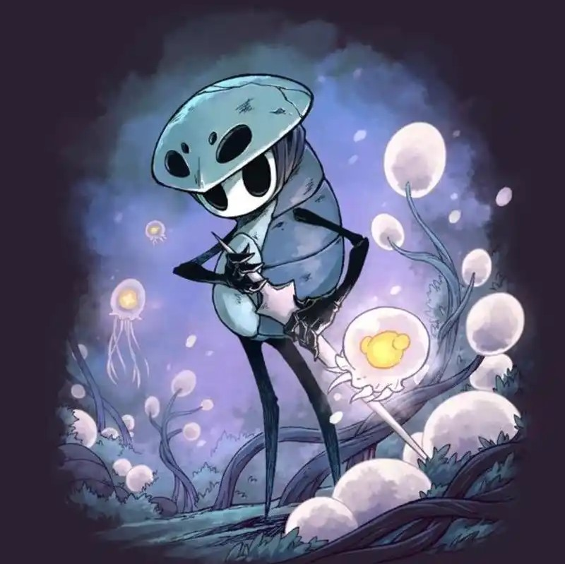

》Quirrell:
与我一样，他从遥远的地方而来，背负着某种使命，却没有任何有关过去的记忆。他生性乐观，居然不觉得失去记忆是坏事。他的心细腻的不像个战士，永远为周围的壮观景色而赞叹，为探索到未曾去往的地方而欣喜。直到他最后一次拔出骨钉，我才知道，原来他的使命是来帮助我。谢谢你，奎若大哥。
“我忘掉了全部遗憾，看到的全是奇迹。”

》Hornet:
她是一路指引我的伙伴，纵使言语不太讨喜。我也明白，她一次次如刁难般的行为，都是对我的考验。是她向我讲述了圣巢的过去，让我知道了自己诞生的使命，指明了我前进的道路。但我依然没想到，最后一役，她会冒着生命危险来帮助我。考验，我通过了；使命，我做到了，你，看到了吗？
“你肩负着全世界的命运，却依然这么坚强……”